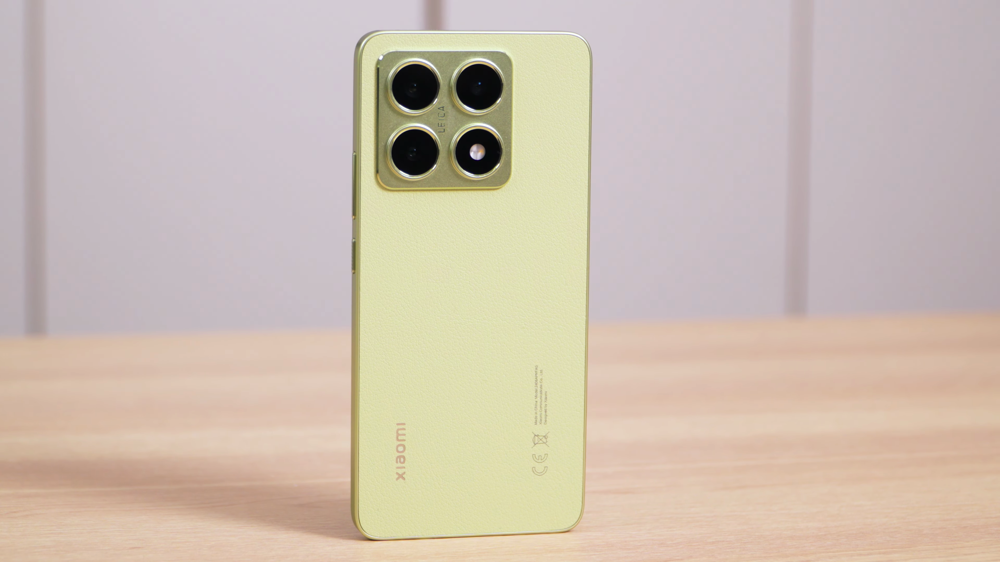

샤오미 14T는 뛰어난 카메라 성능과 가성비로 주목받는 스마트폰입니다. 이번 글에서는 이 제품의 디자인, 카메라 성능, 사용자 경험 등을 자세히 살펴보겠습니다.
제품 소개 및 중요성
- 스마트폰에서 가장 중요한 기능은 카메라이다
- 고가의 플래그십 모델이 아닌 가성비 모델을 찾는 소비자와 대면
- 샤오미 14T는 카메라 스펙에 강점을 둔 모델
스마트폰에서 카메라 기능의 중요성이 커지고 있어 소비자들은 고가의 플래그십 제품이 아닌 가성비에 중점을 둔 모델을 원하게 되었다. 이 중에서 샤오미 14T는 카메라 스펙으로 주목할 만하다.
샤오미 14T 정식 런칭
- 국내에서 정식 런칭된 샤오미 14T
- 메인폰으로 사용해본 경험 공유
샤오미 14T는 최근 한국에서 정식으로 런칭되었으며, 리뷰어는 2주간 메인폰으로서의 사용 경험을 공유하였다.

샤오미 T 시리즈와 경쟁 모델
- 샤오미 T는 홍미 시리즈와 플래그십 모델 사이의 위치
- 삼성 갤럭시 S24 FE와 비슷한 경쟁 모델
샤오미 T 시리즈는 홍미 시리즈와 플래그십 모델 사이에 위치하며, 경쟁 제품으로 삼성 갤럭시 S24 FE와 유사하게 인식된다.

성능과 배터리
- 미디어텍 디멘시티 8300 울트라 장착
- 5000mAh 배터리
- 12GB RAM과 512GB 스토리지 옵션
샤오미 14T는 미디어텍 디멘시티 8300 울트라 프로세서와 5000mAh 배터리를 장착했으며, 뛰어난 성능을 자랑한다.

카메라 스펙
- 메인 카메라 5000만 화소, F1.7 조리개, OIS
- 망원 카메라 50메가 픽셀의 F1.9
- 라이카와 협업한 카메라 성능
샤오미 14T의 메인 카메라는 5000만 화소, OIS 기능을 갖추고 있으며, 망원 카메라는 50메가 픽셀로 상당한 스펙을 자랑한다. 라이카와 협업하여 색감도 뛰어나다.

사용자 경험
- 디스플레이 품질 좋음
- 고속 충전 지원
- 소프트웨어 인터페이스에 대한 사용자 적응
사용자의 경험에 따르면, 6.67인치 아몰레드 디스플레이는 시인성이 뛰어나며, 고속 충전이 지원되어 사용에 편리함을 제공한다. 또한, 소프트웨어 인터페이스도 유사하여 초보자도 쉽게 적응할 수 있다.

가격 및 추천
- 가격 대비 만족할 만한 성능
- 가성비 스펙 탑재
- 서브폰 또는 취미용 카메라로 추천
가격이 599,000원에서 649,000원으로 가성비가 뛰어나며, 카메라 성능과 다양한 재미 요소를 제공하여 서브폰이나 취미용으로 강력히 추천된다.
Tags: #샤오미 14T #스마트폰 리뷰 #카메라 성능 #가성비 스마트폰 #라이카 카메라 #미디어텍 디멘시티 #고속 충전 #스마트폰 디자인 #사용자 경험 #국내 정식 런칭